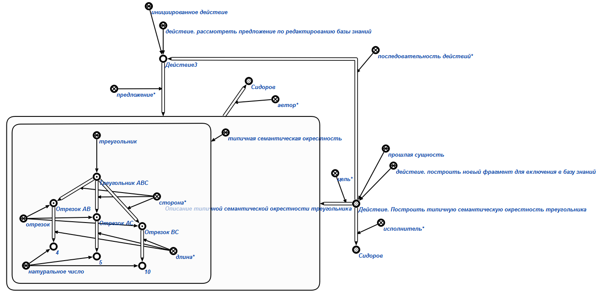

Команда формирования предложения по редактированию базы знаний предназначена для формирования предложения* об изменении базы знаний. Единственным аргументом команды является знак структуры, описывающий предлагаемое изменение в базе знаний (чаще всего – дополнение к имеющейся базе). Результатом выполнения команды является сформированное предложение* по редактированию базы знаний. Например:
